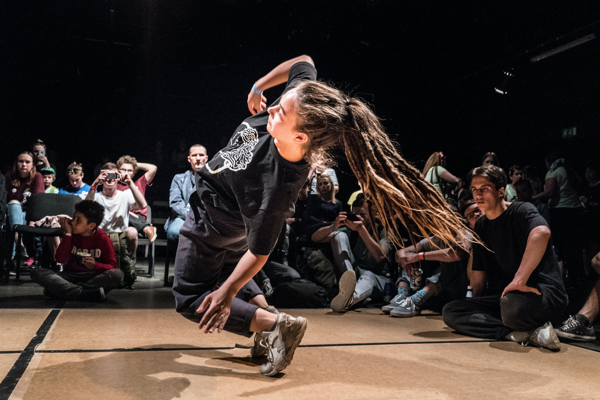

House dance is a social dance and Street dance primarily danced to house music, that has roots in the clubs of Chicago and of New York. "House Dance is an amalgamation of the post-disco era".A lot of their movements and what took place in certain key places, the Jack and a number of clubs after that. It was a community based dance so vocal points were surrounded by music and DJs, but many of the dancers who were not looking to create, ended up becoming a part of that dance vocabulary."
The major source in house dance movement stems directly from the music and the elements within the music such as jazz, African, Latin, soul, R&B, funk, hip hop, etc. The other source is the people, the individuals and their characteristics, ethnicities, origin, etc. You have people of all walks of life partying under one roof. Thus you have exchanges of information (body language) house dance is a social dance before these competitions.
In house dancing, there is an emphasis on the subtle rhythms and riffs of the music, and the footwork follows them closely.